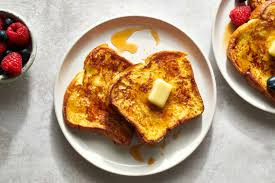

French Toast

Description:
If you're looking for the best French toast recipe on the internet, you've come to the right place. This tender, fluffy, and indulgent recipe comes together quickly and easily with just five ingredients you already have on hand.
Ingredients:
- 2/3 cup milk
- 2 large eggs
- 1 tsp vanilla extract
- 1 tsp ground cinnamon
- 6 thick slices bread
- 1 tsp unsalted butter
Steps:
- Gather all ingredients.
- Whisk milk, eggs, vanilla, cinnamon, and salt together in a shallow bowl.
- Lightly butter a griddle or skillet and heat over medium-high heat. Dunk bread in the egg mixture, soaking both sides.
- Transfer to the hot skillet and cook until golden, 3 to 4 minutes per side.
- Serve hot.